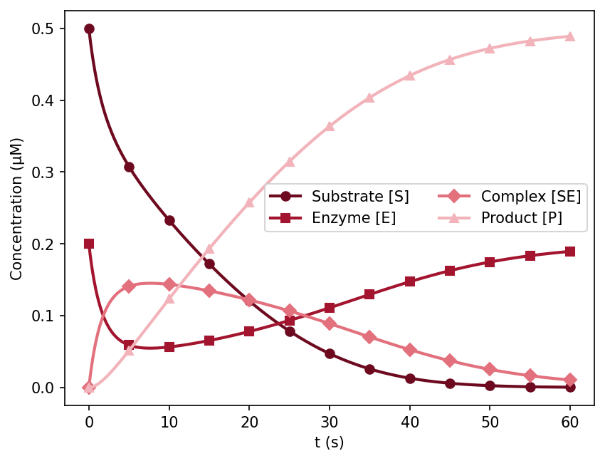
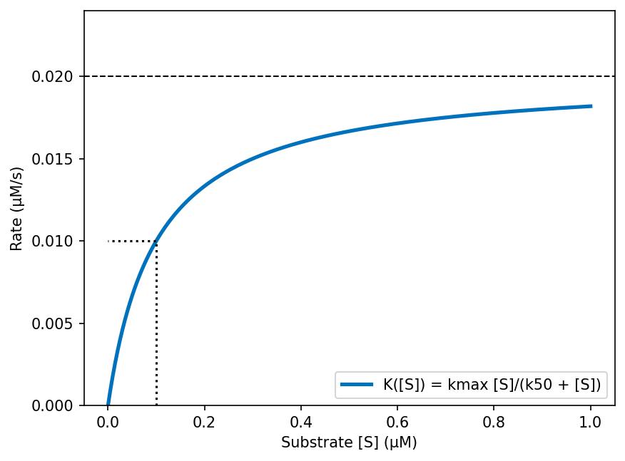
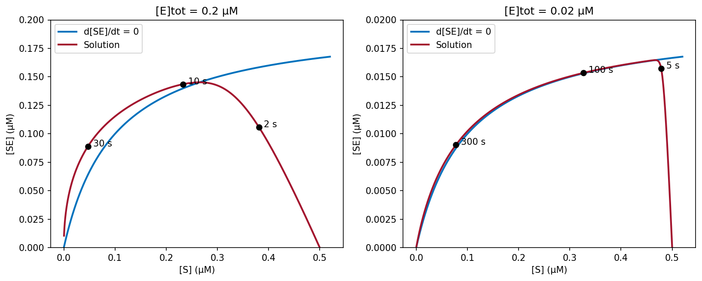
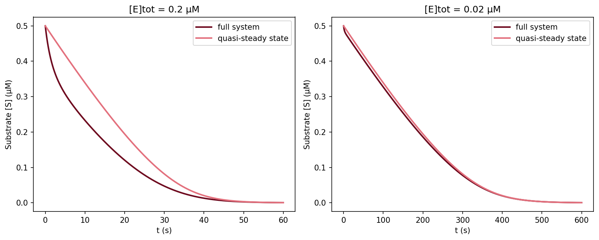

Chapter 4 · Continuous Dynamical Systems with Several Variables
4.3Michaelis–Menten Kinetics
An enzyme E binds a substrate S to form a complex SE, which decays into product P and free enzyme. The law of mass action gives a system for four concentrations. If little enzyme is present, the complex quickly settles at a quasi-steady value, and one obtains the Michaelis–Menten rate.
For each figure of the section you will find the program that produces it. Change parameters and initial values and observe what happens. Figure and equation numbers refer to the book.
Fig. 4.13
The full system
d[S]/dt = −k1 [S][E] + k2 [SE], d[SE]/dt = k1 [S][E] − (k2 + k3) [SE], …
Substrate is converted into product, while the amount of enzyme [E] + [SE] is conserved.

# Fig. 4.13: Michaelis-Menten system with all four concentrations (book, Section 4.3, Eq. 4.12)
# k1 = 1, k2 = 1e-4, k3 = 0.1, [S]0 = 0.5 µM, [E]0 = 0.2 µM, [SE]0 = [P]0 = 0
# (c) 2026 Philipp Kügler · Program for the book "Dynamical Systems in the Life Sciences" · MIT License (see LICENSE)
using Printf, Plots
using OrdinaryDiffEq # package OrdinaryDiffEq: using Pkg; Pkg.add("OrdinaryDiffEq")
# solves dz/dt = f(t, z) and returns the solution at the times t (row i = component i)
loese(f, z0, t; alg = Tsit5(), kw...) = Array(solve(ODEProblem((z, p, s) -> f(s, z), float.(z0), (t[1], t[end])), alg;
reltol = 1e-10, abstol = 1e-12, saveat = t, kw...))
R1 = RGB(0.43, 0.04, 0.12); R2 = RGB(0.64, 0.08, 0.18); R3 = RGB(0.89, 0.44, 0.49)
BL = RGB(0, 0.447, 0.741); HB = RGB(0.45, 0.70, 0.90); GR = RGB(0.2, 0.6, 0.25)
idx(t, tt) = findfirst(t .>= tt - 1e-9) # first index with t >= tt
k1 = 1.0; k2 = 1e-4; k3 = 0.1 # rates in 1/(µM s) and 1/s
S0 = 0.5 # µM
k50 = (k2 + k3) / k1
function mm(t, z)
S, E, C, P = z # substrate, enzyme, complex SE, product
r1 = k1 * S * E; r2 = k2 * C; r3 = k3 * C
return [-r1 + r2, -r1 + r2 + r3, r1 - r2 - r3, r3]
end
E0 = 0.2
t = range(0, 60, length = 3001)
z = loese(mm, [S0, E0, 0, 0], t, abstol = 1e-13); S, E, C, P = eachrow(z)
println("conservation [E] + [SE] = E0 up to rounding errors (< 1e-12): ", maximum(abs.(E .+ C .- E0)) < 1e-12 ? "yes" : "no")
for tt in (5, 20, 60)
i = idx(t, tt)
@printf("t = %2d s: [S] = %.4f, [E] = %.4f, [SE] = %.4f, [P] = %.4f\n", tt, S[i], E[i], C[i], P[i])
end
farben = [R1, R2, R3, RGB(0.95, 0.70, 0.73)]
p = plot(xlabel = "t (s)", ylabel = "Concentration (µM)", legend_columns = 2)
for (y, name, fa, m) in zip([S, E, C, P], ["Substrate [S]", "Enzyme [E]", "Complex [SE]", "Product [P]"], farben, [:circle, :rect, :diamond, :utriangle])
plot!(p, t, y, color = fa, lw = 2, label = name)
scatter!(p, t[1:250:end], y[1:250:end], color = fa, marker = m, label = "")
end
display(p)% Fig. 4.13: Michaelis-Menten system with all four concentrations (book, Section 4.3, Eq. 4.12)
% k1 = 1, k2 = 1e-4, k3 = 0.1, [S]0 = 0.5 µM, [E]0 = 0.2 µM, [SE]0 = [P]0 = 0
% (c) 2026 Philipp Kügler · Program for the book "Dynamical Systems in the Life Sciences" · MIT License (see LICENSE)
k1 = 1; k2 = 1e-4; k3 = 0.1; % rates in 1/(µM s) and 1/s
S0 = 0.5; % µM
k50 = (k2 + k3) / k1;
% z = ([S], [E], [SE], [P]): substrate, enzyme, complex, product
mm = @(t, z) [-k1 * z(1) * z(2) + k2 * z(3); -k1 * z(1) * z(2) + (k2 + k3) * z(3); k1 * z(1) * z(2) - (k2 + k3) * z(3); k3 * z(3)];
opt = odeset('RelTol', 1e-10, 'AbsTol', 1e-13);
E0 = 0.2;
[t, z] = ode45(mm, linspace(0, 60, 3001), [S0; E0; 0; 0], opt);
if max(abs(z(:, 2) + z(:, 3) - E0)) < 1e-12, ok = 'yes'; else, ok = 'no'; end
fprintf('conservation [E] + [SE] = E0 up to rounding errors (< 1e-12): %s\n', ok);
for tt = [5 20 60]
i = find(t >= tt - 1e-9, 1);
fprintf('t = %2d s: [S] = %.4f, [E] = %.4f, [SE] = %.4f, [P] = %.4f\n', tt, z(i, :));
end
farben = [0.43 0.04 0.12; 0.64 0.08 0.18; 0.89 0.44 0.49; 0.95 0.70 0.73]; marker = 'osd^';
hold on
for j = 1:4
plot(t, z(:, j), 'Color', farben(j, :), 'LineWidth', 2);
plot(t(1:250:end), z(1:250:end, j), marker(j), 'Color', farben(j, :), 'MarkerFaceColor', farben(j, :), 'HandleVisibility', 'off');
end
hold off
xlabel('t (s)'); ylabel('Concentration (µM)'); legend('Substrate [S]', 'Enzyme [E]', 'Complex [SE]', 'Product [P]');# Fig. 4.13: Michaelis-Menten system with all four concentrations (book, Section 4.3, Eq. 4.12)
# k1 = 1, k2 = 1e-4, k3 = 0.1, [S]0 = 0.5 µM, [E]0 = 0.2 µM, [SE]0 = [P]0 = 0
# (c) 2026 Philipp Kügler · Program for the book "Dynamical Systems in the Life Sciences" · MIT License (see LICENSE)
import numpy as np
import matplotlib.pyplot as plt
from scipy.integrate import solve_ivp
k1, k2, k3 = 1.0, 1e-4, 0.1 # rates in 1/(µM s) and 1/s
S0 = 0.5 # µM
k50 = (k2 + k3) / k1
def mm(t, z):
S, E, C, P = z # substrate, enzyme, complex SE, product
r1, r2, r3 = k1 * S * E, k2 * C, k3 * C
return [-r1 + r2, -r1 + r2 + r3, r1 - r2 - r3, r3]
E0 = 0.2
t = np.linspace(0, 60, 3001)
s = solve_ivp(mm, [0, 60], [S0, E0, 0, 0], t_eval=t, method="LSODA", rtol=1e-10, atol=1e-13)
S, E, C, P = s.y
print("conservation [E] + [SE] = E0 up to rounding errors (< 1e-12):", "yes" if np.max(abs(E + C - E0)) < 1e-12 else "no")
for tt in [5, 20, 60]:
i = np.searchsorted(t, tt)
print(f"t = {tt:2d} s: [S] = {S[i]:.4f}, [E] = {E[i]:.4f}, [SE] = {C[i]:.4f}, [P] = {P[i]:.4f}")
farben = [(0.43, 0.04, 0.12), (0.64, 0.08, 0.18), (0.89, 0.44, 0.49), (0.95, 0.70, 0.73)]
for y, name, fa, m in zip([S, E, C, P], ["Substrate [S]", "Enzyme [E]", "Complex [SE]", "Product [P]"], farben, "osD^"):
plt.plot(t, y, "-" + m, color=fa, lw=2, markevery=250, label=name)
plt.xlabel("t (s)"); plt.ylabel("Concentration (µM)"); plt.legend(ncol=2)
plt.show()# Fig. 4.13: Michaelis-Menten system with all four concentrations (book, Section 4.3, Eq. 4.12)
# k1 = 1, k2 = 1e-4, k3 = 0.1, [S]0 = 0.5 µM, [E]0 = 0.2 µM, [SE]0 = [P]0 = 0
# (c) 2026 Philipp Kügler · Program for the book "Dynamical Systems in the Life Sciences" · MIT License (see LICENSE)
library(deSolve) # package deSolve: install.packages("deSolve")
k1 <- 1; k2 <- 1e-4; k3 <- 0.1 # rates in 1/(µM s) and 1/s
S0 <- 0.5 # µM
k50 <- (k2 + k3) / k1
# z = ([S], [E], [SE], [P]): substrate, enzyme, complex, product
mm <- function(t, z) c(-k1 * z[1] * z[2] + k2 * z[3], -k1 * z[1] * z[2] + (k2 + k3) * z[3],
k1 * z[1] * z[2] - (k2 + k3) * z[3], k3 * z[3])
loese <- function(f, z0, t) ode(z0, t, function(t, z, p) list(f(t, z)), NULL, method = "lsoda", rtol = 1e-10, atol = 1e-14)
E0 <- 0.2
x <- loese(mm, c(S0, E0, 0, 0), seq(0, 60, length.out = 3001)) # columns: time, [S], [E], [SE], [P]
cat("conservation [E] + [SE] = E0 up to rounding errors (< 1e-12):", if (max(abs(x[, 3] + x[, 4] - E0)) < 1e-12) "yes" else "no", "\n")
for (tt in c(5, 20, 60)) {
i <- which(x[, 1] >= tt - 1e-9)[1]
cat(sprintf("t = %2d s: [S] = %.4f, [E] = %.4f, [SE] = %.4f, [P] = %.4f\n", tt, x[i, 2], x[i, 3], x[i, 4], x[i, 5]))
}
farben <- c(rgb(0.43, 0.04, 0.12), rgb(0.64, 0.08, 0.18), rgb(0.89, 0.44, 0.49), rgb(0.95, 0.70, 0.73)); zeichen <- c(16, 15, 18, 17)
plot(NULL, xlim = c(0, 60), ylim = c(0, 0.55), xlab = "t (s)", ylab = "Concentration (µM)")
for (j in 1:4) {
lines(x[, 1], x[, j + 1], col = farben[j], lwd = 2)
idx <- seq(1, nrow(x), 250); points(x[idx, 1], x[idx, j + 1], pch = zeichen[j], col = farben[j])
}
legend("right", legend = c("Substrate [S]", "Enzyme [E]", "Complex [SE]", "Product [P]"), col = farben, pch = zeichen, lwd = 2)Output in the command window
conservation [E] + [SE] = E0 up to rounding errors (< 1e-12): yes
t = 5 s: [S] = 0.3077, [E] = 0.0591, [SE] = 0.1409, [P] = 0.0514
t = 20 s: [S] = 0.1205, [E] = 0.0780, [SE] = 0.1220, [P] = 0.2576
t = 60 s: [S] = 0.0004, [E] = 0.1895, [SE] = 0.0105, [P] = 0.4891Fig. 4.14
Michaelis–Menten rate
K([S]) = kmax [S]/(k50 + [S])
For small substrate concentrations the rate rises linearly, for large ones it approaches kmax. At [S] = k50 half the maximum rate is reached.

# Fig. 4.14: Michaelis-Menten rate (book, Section 4.3, Eq. 4.14)
# K([S]) = kmax [S]/(k50 + [S]) with kmax = k3 [E]tot = 0.02 µM/s and k50 = (k2 + k3)/k1 ≈ 0.1 µM
# (c) 2026 Philipp Kügler · Program for the book "Dynamical Systems in the Life Sciences" · MIT License (see LICENSE)
using Printf, Plots
R1 = RGB(0.43, 0.04, 0.12); R2 = RGB(0.64, 0.08, 0.18); R3 = RGB(0.89, 0.44, 0.49)
BL = RGB(0, 0.447, 0.741); HB = RGB(0.45, 0.70, 0.90); GR = RGB(0.2, 0.6, 0.25)
k1 = 1.0; k2 = 1e-4; k3 = 0.1; Etot = 0.2
kmax = k3 * Etot; k50 = (k2 + k3) / k1
@printf("kmax = %g µM/s, k50 = %.4f µM\n", kmax, k50)
S = range(0, 1, length = 400)
p = plot(S, kmax .* S ./ (k50 .+ S), color = BL, lw = 2.5, label = "K([S]) = kmax [S]/(k50 + [S])", ylims = (0, 0.024),
legend = :bottomright, xlabel = "Substrate [S] (µM)", ylabel = "Rate (µM/s)")
hline!(p, [kmax], color = :black, ls = :dash, label = "")
plot!(p, [k50, k50, 0], [0, kmax / 2, kmax / 2], color = :black, ls = :dot, label = "")
display(p)% Fig. 4.14: Michaelis-Menten rate (book, Section 4.3, Eq. 4.14)
% K([S]) = kmax [S]/(k50 + [S]) with kmax = k3 [E]tot = 0.02 µM/s and k50 = (k2 + k3)/k1 ≈ 0.1 µM
% (c) 2026 Philipp Kügler · Program for the book "Dynamical Systems in the Life Sciences" · MIT License (see LICENSE)
k1 = 1; k2 = 1e-4; k3 = 0.1; Etot = 0.2;
kmax = k3 * Etot; k50 = (k2 + k3) / k1;
fprintf('kmax = %g µM/s, k50 = %.4f µM\n', kmax, k50);
S = linspace(0, 1, 400);
plot(S, kmax * S ./ (k50 + S), 'Color', [0 0.447 0.741], 'LineWidth', 2.5); hold on
plot([0 1], [kmax kmax], 'k--'); plot([k50 k50 0], [0 kmax / 2 kmax / 2], 'k:'); hold off
xlabel('Substrate [S] (µM)'); ylabel('Rate (µM/s)'); ylim([0 0.024]);
legend('K([S]) = k_{max} [S]/(k_{50} + [S])', 'Location', 'southeast');# Fig. 4.14: Michaelis-Menten rate (book, Section 4.3, Eq. 4.14)
# K([S]) = kmax [S]/(k50 + [S]) with kmax = k3 [E]tot = 0.02 µM/s and k50 = (k2 + k3)/k1 ≈ 0.1 µM
# (c) 2026 Philipp Kügler · Program for the book "Dynamical Systems in the Life Sciences" · MIT License (see LICENSE)
import numpy as np
import matplotlib.pyplot as plt
k1, k2, k3, Etot = 1.0, 1e-4, 0.1, 0.2
kmax, k50 = k3 * Etot, (k2 + k3) / k1
print(f"kmax = {kmax:g} µM/s, k50 = {k50:.4f} µM")
S = np.linspace(0, 1, 400)
plt.plot(S, kmax * S / (k50 + S), color=(0, 0.447, 0.741), lw=2.5, label="K([S]) = kmax [S]/(k50 + [S])")
plt.axhline(kmax, color="k", ls="--", lw=1)
plt.plot([k50, k50, 0], [0, kmax / 2, kmax / 2], "k:")
plt.xlabel("Substrate [S] (µM)"); plt.ylabel("Rate (µM/s)"); plt.ylim(0, 0.024); plt.legend(loc="lower right")
plt.show()# Fig. 4.14: Michaelis-Menten rate (book, Section 4.3, Eq. 4.14)
# K([S]) = kmax [S]/(k50 + [S]) with kmax = k3 [E]tot = 0.02 µM/s and k50 = (k2 + k3)/k1 ≈ 0.1 µM
# (c) 2026 Philipp Kügler · Program for the book "Dynamical Systems in the Life Sciences" · MIT License (see LICENSE)
k1 <- 1; k2 <- 1e-4; k3 <- 0.1; Etot <- 0.2
kmax <- k3 * Etot; k50 <- (k2 + k3) / k1
cat(sprintf("kmax = %g µM/s, k50 = %.4f µM\n", kmax, k50))
S <- seq(0, 1, length.out = 400)
plot(S, kmax * S / (k50 + S), type = "l", col = rgb(0, 0.447, 0.741), lwd = 2.5, ylim = c(0, 0.024), xlab = "Substrate [S] (µM)", ylab = "Rate (µM/s)")
abline(h = kmax, lty = 2); lines(c(k50, k50, 0), c(0, kmax / 2, kmax / 2), lty = 3)
legend("bottomright", legend = "K([S]) = kmax [S]/(k50 + [S])", col = rgb(0, 0.447, 0.741), lwd = 2.5)Output in the command window
kmax = 0.02 µM/s, k50 = 0.1001 µMFig. 4.15
The ([S], [SE]) plane
d[SE]/dt = 0: [SE] = [E]tot [S]/([S] + k50)
The solution quickly reaches the curve on which d[SE]/dt = 0 and then runs along it. With less enzyme (right) this happens even faster relative to the conversion time.

# Fig. 4.15: Michaelis-Menten system in the ([S], [SE]) plane (book, Section 4.3, Eq. 4.13)
# solution with time marks and the curve d[SE]/dt = 0, i.e. [SE] = [E]tot [S]/([S] + k50); left [E]tot = 0.2 µM, right 0.02 µM
# (c) 2026 Philipp Kügler · Program for the book "Dynamical Systems in the Life Sciences" · MIT License (see LICENSE)
using Printf, Plots
using OrdinaryDiffEq # package OrdinaryDiffEq: using Pkg; Pkg.add("OrdinaryDiffEq")
# solves dz/dt = f(t, z) and returns the solution at the times t (row i = component i)
loese(f, z0, t; alg = Tsit5(), kw...) = Array(solve(ODEProblem((z, p, s) -> f(s, z), float.(z0), (t[1], t[end])), alg;
reltol = 1e-10, abstol = 1e-12, saveat = t, kw...))
R1 = RGB(0.43, 0.04, 0.12); R2 = RGB(0.64, 0.08, 0.18); R3 = RGB(0.89, 0.44, 0.49)
BL = RGB(0, 0.447, 0.741); HB = RGB(0.45, 0.70, 0.90); GR = RGB(0.2, 0.6, 0.25)
idx(t, tt) = findfirst(t .>= tt - 1e-9) # first index with t >= tt
k1 = 1.0; k2 = 1e-4; k3 = 0.1 # rates in 1/(µM s) and 1/s
S0 = 0.5 # µM
k50 = (k2 + k3) / k1
function mm(t, z)
S, E, C, P = z # substrate, enzyme, complex SE, product
r1 = k1 * S * E; r2 = k2 * C; r3 = k3 * C
return [-r1 + r2, -r1 + r2 + r3, r1 - r2 - r3, r3]
end
bilder = []
for (E0, T, marken) in [(0.2, 60, [2, 10, 30]), (0.02, 600, [5, 100, 300])]
t = range(0, T, length = 4001)
z = loese(mm, [S0, E0, 0, 0], t, abstol = 1e-14); S = z[1, :]; C = z[3, :]
Sg = range(0, 0.52, length = 300)
p = plot(Sg, E0 .* Sg ./ (Sg .+ k50), color = BL, lw = 2, label = "d[SE]/dt = 0", ylims = (0, E0), legend = :topleft,
title = @sprintf("[E]tot = %g µM", E0), xlabel = "[S] (µM)", ylabel = "[SE] (µM)")
plot!(p, S, C, color = R2, lw = 2, label = "Solution")
for tm in marken
i = idx(t, tm)
scatter!(p, [S[i]], [C[i]], color = :black, label = ""); annotate!(p, S[i] + 0.01, C[i], text("$tm s", 9, :left))
@printf("[E]tot = %g: t = %3d s: [S] = %.4f, [SE] = %.5f\n", E0, tm, S[i], C[i])
end
push!(bilder, p)
end
display(plot(bilder..., layout = (1, 2), size = (900, 420)))% Fig. 4.15: Michaelis-Menten system in the ([S], [SE]) plane (book, Section 4.3, Eq. 4.13)
% solution with time marks and the curve d[SE]/dt = 0, i.e. [SE] = [E]tot [S]/([S] + k50); left [E]tot = 0.2 µM, right 0.02 µM
% (c) 2026 Philipp Kügler · Program for the book "Dynamical Systems in the Life Sciences" · MIT License (see LICENSE)
k1 = 1; k2 = 1e-4; k3 = 0.1; % rates in 1/(µM s) and 1/s
S0 = 0.5; % µM
k50 = (k2 + k3) / k1;
% z = ([S], [E], [SE], [P]): substrate, enzyme, complex, product
mm = @(t, z) [-k1 * z(1) * z(2) + k2 * z(3); -k1 * z(1) * z(2) + (k2 + k3) * z(3); k1 * z(1) * z(2) - (k2 + k3) * z(3); k3 * z(3)];
opt = odeset('RelTol', 1e-10, 'AbsTol', 1e-13);
opt = odeset('RelTol', 1e-10, 'AbsTol', 1e-14);
E0s = [0.2 0.02]; Ts = [60 600]; marken = [2 10 30; 5 100 300];
for j = 1:2
E0 = E0s(j);
[t, z] = ode45(mm, linspace(0, Ts(j), 4001), [S0; E0; 0; 0], opt);
S = z(:, 1); C = z(:, 3);
subplot(1, 2, j);
Sg = linspace(0, 0.52, 300);
plot(Sg, E0 * Sg ./ (Sg + k50), 'Color', [0 0.447 0.741], 'LineWidth', 2); hold on
plot(S, C, 'Color', [0.64 0.08 0.18], 'LineWidth', 2);
for tm = marken(j, :)
i = find(t >= tm - 1e-9, 1);
plot(S(i), C(i), 'ko', 'MarkerFaceColor', 'k'); text(S(i) + 0.01, C(i), sprintf('%d s', tm));
fprintf('[E]tot = %g: t = %3d s: [S] = %.4f, [SE] = %.5f\n', E0, tm, S(i), C(i));
end
hold off
xlabel('[S] (µM)'); ylabel('[SE] (µM)'); ylim([0 E0]); title(sprintf('[E]tot = %g µM', E0));
legend('d[SE]/dt = 0', 'Solution', 'Location', 'northwest');
end# Fig. 4.15: Michaelis-Menten system in the ([S], [SE]) plane (book, Section 4.3, Eq. 4.13)
# solution with time marks and the curve d[SE]/dt = 0, i.e. [SE] = [E]tot [S]/([S] + k50); left [E]tot = 0.2 µM, right 0.02 µM
# (c) 2026 Philipp Kügler · Program for the book "Dynamical Systems in the Life Sciences" · MIT License (see LICENSE)
import numpy as np
import matplotlib.pyplot as plt
from scipy.integrate import solve_ivp
k1, k2, k3 = 1.0, 1e-4, 0.1 # rates in 1/(µM s) and 1/s
S0 = 0.5 # µM
k50 = (k2 + k3) / k1
def mm(t, z):
S, E, C, P = z # substrate, enzyme, complex SE, product
r1, r2, r3 = k1 * S * E, k2 * C, k3 * C
return [-r1 + r2, -r1 + r2 + r3, r1 - r2 - r3, r3]
fig, axs = plt.subplots(1, 2, figsize=(11, 4.5))
for ax, E0, T, marken in [(axs[0], 0.2, 60, [2, 10, 30]), (axs[1], 0.02, 600, [5, 100, 300])]:
t = np.linspace(0, T, 4001)
s = solve_ivp(mm, [0, T], [S0, E0, 0, 0], t_eval=t, method="LSODA", rtol=1e-10, atol=1e-14)
S, C = s.y[0], s.y[2]
Sg = np.linspace(0, 0.52, 300)
ax.plot(Sg, E0 * Sg / (Sg + k50), color=(0, 0.447, 0.741), lw=2, label="d[SE]/dt = 0")
ax.plot(S, C, color=(0.64, 0.08, 0.18), lw=2, label="Solution")
for tm in marken:
i = np.searchsorted(t, tm)
ax.plot(S[i], C[i], "ko"); ax.text(S[i] + 0.01, C[i], f"{tm} s")
print(f"[E]tot = {E0:g}: t = {tm:3d} s: [S] = {S[i]:.4f}, [SE] = {C[i]:.5f}")
ax.set_xlabel("[S] (µM)"); ax.set_ylabel("[SE] (µM)"); ax.set_ylim(0, E0); ax.set_title(f"[E]tot = {E0:g} µM"); ax.legend(loc="upper left")
plt.tight_layout()
plt.show()# Fig. 4.15: Michaelis-Menten system in the ([S], [SE]) plane (book, Section 4.3, Eq. 4.13)
# solution with time marks and the curve d[SE]/dt = 0, i.e. [SE] = [E]tot [S]/([S] + k50); left [E]tot = 0.2 µM, right 0.02 µM
# (c) 2026 Philipp Kügler · Program for the book "Dynamical Systems in the Life Sciences" · MIT License (see LICENSE)
library(deSolve) # package deSolve: install.packages("deSolve")
k1 <- 1; k2 <- 1e-4; k3 <- 0.1 # rates in 1/(µM s) and 1/s
S0 <- 0.5 # µM
k50 <- (k2 + k3) / k1
# z = ([S], [E], [SE], [P]): substrate, enzyme, complex, product
mm <- function(t, z) c(-k1 * z[1] * z[2] + k2 * z[3], -k1 * z[1] * z[2] + (k2 + k3) * z[3],
k1 * z[1] * z[2] - (k2 + k3) * z[3], k3 * z[3])
loese <- function(f, z0, t) ode(z0, t, function(t, z, p) list(f(t, z)), NULL, method = "lsoda", rtol = 1e-10, atol = 1e-14)
par(mfrow = c(1, 2))
for (fall in list(list(0.2, 60, c(2, 10, 30)), list(0.02, 600, c(5, 100, 300)))) {
E0 <- fall[[1]]; T <- fall[[2]]
x <- loese(mm, c(S0, E0, 0, 0), seq(0, T, length.out = 4001))
Sg <- seq(0, 0.52, length.out = 300)
plot(Sg, E0 * Sg / (Sg + k50), type = "l", col = rgb(0, 0.447, 0.741), lwd = 2, ylim = c(0, E0),
xlab = "[S] (µM)", ylab = "[SE] (µM)", main = sprintf("[E]tot = %g µM", E0))
lines(x[, 2], x[, 4], col = rgb(0.64, 0.08, 0.18), lwd = 2)
for (tm in fall[[3]]) {
i <- which(x[, 1] >= tm - 1e-9)[1]
points(x[i, 2], x[i, 4], pch = 16); text(x[i, 2] + 0.01, x[i, 4], sprintf("%d s", tm), adj = 0)
cat(sprintf("[E]tot = %g: t = %3d s: [S] = %.4f, [SE] = %.5f\n", E0, tm, x[i, 2], x[i, 4]))
}
legend("topleft", legend = c("d[SE]/dt = 0", "Solution"), col = c(rgb(0, 0.447, 0.741), rgb(0.64, 0.08, 0.18)), lwd = 2)
}Output in the command window
[E]tot = 0.2: t = 2 s: [S] = 0.3810, [SE] = 0.10593
[E]tot = 0.2: t = 10 s: [S] = 0.2328, [SE] = 0.14355
[E]tot = 0.2: t = 30 s: [S] = 0.0472, [SE] = 0.08900
[E]tot = 0.02: t = 5 s: [S] = 0.4785, [SE] = 0.01573
[E]tot = 0.02: t = 100 s: [S] = 0.3270, [SE] = 0.01535
[E]tot = 0.02: t = 300 s: [S] = 0.0775, [SE] = 0.00902Fig. 4.16
Full system and quasi-steady-state approximation
d[S]/dt = −kmax [S]/(k50 + [S])
With [E]tot = 0.02 µM the approximation agrees much better than with 0.2 µM; the output gives the largest deviation.

# Fig. 4.16: Full system and quasi-steady-state approximation (book, Section 4.3, Eq. 4.12 and 4.14)
# d[S]/dt = -kmax [S]/(k50 + [S]) with kmax = k3 [E]tot; left [E]tot = 0.2 µM, right 0.02 µM
# (c) 2026 Philipp Kügler · Program for the book "Dynamical Systems in the Life Sciences" · MIT License (see LICENSE)
using Printf, Plots
using OrdinaryDiffEq # package OrdinaryDiffEq: using Pkg; Pkg.add("OrdinaryDiffEq")
# solves dz/dt = f(t, z) and returns the solution at the times t (row i = component i)
loese(f, z0, t; alg = Tsit5(), kw...) = Array(solve(ODEProblem((z, p, s) -> f(s, z), float.(z0), (t[1], t[end])), alg;
reltol = 1e-10, abstol = 1e-12, saveat = t, kw...))
R1 = RGB(0.43, 0.04, 0.12); R2 = RGB(0.64, 0.08, 0.18); R3 = RGB(0.89, 0.44, 0.49)
BL = RGB(0, 0.447, 0.741); HB = RGB(0.45, 0.70, 0.90); GR = RGB(0.2, 0.6, 0.25)
k1 = 1.0; k2 = 1e-4; k3 = 0.1 # rates in 1/(µM s) and 1/s
S0 = 0.5 # µM
k50 = (k2 + k3) / k1
function mm(t, z)
S, E, C, P = z # substrate, enzyme, complex SE, product
r1 = k1 * S * E; r2 = k2 * C; r3 = k3 * C
return [-r1 + r2, -r1 + r2 + r3, r1 - r2 - r3, r3]
end
bilder = []
for (E0, T) in [(0.2, 60), (0.02, 600)]
t = range(0, T, length = 4001)
voll = loese(mm, [S0, E0, 0, 0], t, abstol = 1e-14)[1, :]
kmax = k3 * E0
qss = loese((t, S) -> [-kmax * S[1] / (k50 + S[1])], [S0], t, abstol = 1e-13)[1, :]
@printf("[E]tot = %g: largest deviation %.4f µM\n", E0, maximum(abs.(voll .- qss)))
p = plot(t, voll, color = R1, lw = 2, label = "full system", title = @sprintf("[E]tot = %g µM", E0),
xlabel = "t (s)", ylabel = "Substrate [S] (µM)")
plot!(p, t, qss, color = R3, lw = 2, label = "quasi-steady state")
push!(bilder, p)
end
display(plot(bilder..., layout = (1, 2), size = (900, 420)))% Fig. 4.16: Full system and quasi-steady-state approximation (book, Section 4.3, Eq. 4.12 and 4.14)
% d[S]/dt = -kmax [S]/(k50 + [S]) with kmax = k3 [E]tot; left [E]tot = 0.2 µM, right 0.02 µM
% (c) 2026 Philipp Kügler · Program for the book "Dynamical Systems in the Life Sciences" · MIT License (see LICENSE)
k1 = 1; k2 = 1e-4; k3 = 0.1; % rates in 1/(µM s) and 1/s
S0 = 0.5; % µM
k50 = (k2 + k3) / k1;
% z = ([S], [E], [SE], [P]): substrate, enzyme, complex, product
mm = @(t, z) [-k1 * z(1) * z(2) + k2 * z(3); -k1 * z(1) * z(2) + (k2 + k3) * z(3); k1 * z(1) * z(2) - (k2 + k3) * z(3); k3 * z(3)];
opt = odeset('RelTol', 1e-10, 'AbsTol', 1e-13);
opt = odeset('RelTol', 1e-10, 'AbsTol', 1e-14);
E0s = [0.2 0.02]; Ts = [60 600];
for j = 1:2
E0 = E0s(j); T = Ts(j);
[t, z] = ode45(mm, linspace(0, T, 4001), [S0; E0; 0; 0], opt);
kmax = k3 * E0;
[t, q] = ode45(@(t, S) -kmax * S / (k50 + S), t, S0, odeset('RelTol', 1e-10, 'AbsTol', 1e-13));
fprintf('[E]tot = %g: largest deviation %.4f µM\n', E0, max(abs(z(:, 1) - q)));
subplot(1, 2, j);
plot(t, z(:, 1), 'Color', [0.43 0.04 0.12], 'LineWidth', 2); hold on
plot(t, q, 'Color', [0.89 0.44 0.49], 'LineWidth', 2); hold off
xlabel('t (s)'); ylabel('Substrate [S] (µM)'); title(sprintf('[E]tot = %g µM', E0)); legend('full system', 'quasi-steady state');
end# Fig. 4.16: Full system and quasi-steady-state approximation (book, Section 4.3, Eq. 4.12 and 4.14)
# d[S]/dt = -kmax [S]/(k50 + [S]) with kmax = k3 [E]tot; left [E]tot = 0.2 µM, right 0.02 µM
# (c) 2026 Philipp Kügler · Program for the book "Dynamical Systems in the Life Sciences" · MIT License (see LICENSE)
import numpy as np
import matplotlib.pyplot as plt
from scipy.integrate import solve_ivp
k1, k2, k3 = 1.0, 1e-4, 0.1 # rates in 1/(µM s) and 1/s
S0 = 0.5 # µM
k50 = (k2 + k3) / k1
def mm(t, z):
S, E, C, P = z # substrate, enzyme, complex SE, product
r1, r2, r3 = k1 * S * E, k2 * C, k3 * C
return [-r1 + r2, -r1 + r2 + r3, r1 - r2 - r3, r3]
fig, axs = plt.subplots(1, 2, figsize=(11, 4.5))
for ax, E0, T in [(axs[0], 0.2, 60), (axs[1], 0.02, 600)]:
t = np.linspace(0, T, 4001)
voll = solve_ivp(mm, [0, T], [S0, E0, 0, 0], t_eval=t, method="LSODA", rtol=1e-10, atol=1e-14).y[0]
kmax = k3 * E0
qss = solve_ivp(lambda t, S: -kmax * S / (k50 + S), [0, T], [S0], t_eval=t, rtol=1e-10, atol=1e-13).y[0]
print(f"[E]tot = {E0:g}: largest deviation {np.max(abs(voll - qss)):.4f} µM")
ax.plot(t, voll, color=(0.43, 0.04, 0.12), lw=2, label="full system")
ax.plot(t, qss, color=(0.89, 0.44, 0.49), lw=2, label="quasi-steady state")
ax.set_xlabel("t (s)"); ax.set_ylabel("Substrate [S] (µM)"); ax.set_title(f"[E]tot = {E0:g} µM"); ax.legend()
plt.tight_layout()
plt.show()# Fig. 4.16: Full system and quasi-steady-state approximation (book, Section 4.3, Eq. 4.12 and 4.14)
# d[S]/dt = -kmax [S]/(k50 + [S]) with kmax = k3 [E]tot; left [E]tot = 0.2 µM, right 0.02 µM
# (c) 2026 Philipp Kügler · Program for the book "Dynamical Systems in the Life Sciences" · MIT License (see LICENSE)
library(deSolve) # package deSolve: install.packages("deSolve")
k1 <- 1; k2 <- 1e-4; k3 <- 0.1 # rates in 1/(µM s) and 1/s
S0 <- 0.5 # µM
k50 <- (k2 + k3) / k1
# z = ([S], [E], [SE], [P]): substrate, enzyme, complex, product
mm <- function(t, z) c(-k1 * z[1] * z[2] + k2 * z[3], -k1 * z[1] * z[2] + (k2 + k3) * z[3],
k1 * z[1] * z[2] - (k2 + k3) * z[3], k3 * z[3])
loese <- function(f, z0, t) ode(z0, t, function(t, z, p) list(f(t, z)), NULL, method = "lsoda", rtol = 1e-10, atol = 1e-14)
par(mfrow = c(1, 2))
for (fall in list(c(0.2, 60), c(0.02, 600))) {
E0 <- fall[1]; T <- fall[2]
t <- seq(0, T, length.out = 4001)
voll <- loese(mm, c(S0, E0, 0, 0), t)[, 2]
kmax <- k3 * E0
qss <- ode(S0, t, function(t, S, p) list(-kmax * S / (k50 + S)), NULL, method = "lsoda", rtol = 1e-10, atol = 1e-13)[, 2]
cat(sprintf("[E]tot = %g: largest deviation %.4f µM\n", E0, max(abs(voll - qss))))
plot(t, voll, type = "l", col = rgb(0.43, 0.04, 0.12), lwd = 2, ylim = c(0, 0.5), xlab = "t (s)", ylab = "Substrate [S] (µM)",
main = sprintf("[E]tot = %g µM", E0))
lines(t, qss, col = rgb(0.89, 0.44, 0.49), lwd = 2)
legend("topright", legend = c("full system", "quasi-steady state"), col = c(rgb(0.43, 0.04, 0.12), rgb(0.89, 0.44, 0.49)), lwd = 2)
}Output in the command window
[E]tot = 0.2: largest deviation 0.1114 µM
[E]tot = 0.02: largest deviation 0.0136 µMMATLAB apps from the course
Download, put into a folder, and type the name without extension in MATLAB, e.g. michaelis_menten_app. The apps use the graphical user interface of MATLAB and do not run in GNU Octave. Their user interface is in German.
- michaelis_menten_app.mEnzyme kinetics: full system and quasi-steady-state approximation